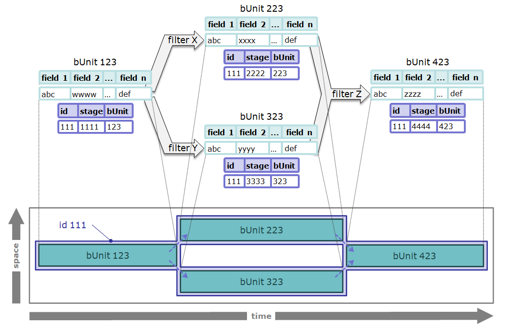

TtDT - Report - Building resilient data item transformation transparency
Introduction
In this section the focus is on building transformation transparency for data items. This is done in the context of the bCLEARer stage pipeline datasets.
As in the previous section, after a section setting the scene, the following topics are covered.
-
Firstly, a general notion of algorithmic identity, from which difference and so transformation can be established, and
-
Secondly, how to implement transparency in the individual bCLEARer stage pipelines through tracking, tracing and testing transformations.
And, as before, the second topic is divided into three parts:
-
mapping tracking of intended identities
-
mapping tracing of intended changing identities
-
testing tracking and tracing for actual executions
[]{#Bookmark76}
Setting the scene
The previous section looked at the bUnit flow as a sequence of bUnit process types -- and how, at the dataset level, one could make this not only transparent, open to inspection, but also resilient in the face of change. It characterised a bUnit process type as a type of process that consumes one or more (input) dataset types and produces one or more new (output) dataset types.
The same pattern is recapitulated at the finer-grained level of data items. Each bUnit dataset is a collection of data items -- the bUnit data items. The bUnit item process type consumes one or more (input) data item types and produces one or more new (output) data items. So item process types have associated item flow mappings -- mappings from the individual input data items and to the individual output data items. One can visualise this in a similar way to datasets as in the figure below.\
[
A general notion of algorithmic data item identity
To enable tracking and tracing (of algorithmic data item identities) one firstly needs to identify the data item identities to track and trace. Then one maps them onto the bUnit item identities in the bCLEARer stage pipelines. This gives one a basis for testing the tracking and tracing.
The two core types of algorithmic data item identity bCLEARer works with at the moment are the same as for datasets:
-
data item identity
-
data item immutable stage identity
These identities are described below.
[]{#Bookmark78}
Data item identity
The first type of algorithmic identity is data item identity. Whenever a data item comes into the scope of the pipeline, whether being passed into the pipeline from a data source or created by a filter in the pipeline, it is allocated a unique data item identity. It is the responsibility of the first filter to handle the data item to generate the identity and attach it to the data item.
The specific algorithm is selected during the bCLEARer stage pipeline design process. There are various ways of doing this and the choice will depend upon the context. In the case of tables, this is usually based upon a primary key of some kind. If there are no keys, then it can be based upon something as simple as a row count. The ways bCLEARer implements the algorithm is described here: TtDT - Report - Appendix - bH - bHashing and bSumming{linked-resource-id="5768839184" linked-resource-version="4" linked-resource-type="page"}, often these are hashes.
The identity travels along the pipeline flow and is stored in subsequent versions of the data item -- in subsequent datasets. It is the responsibility of the filters that write data items to ensure when outputting one that the identity is passed through.
Of course, it is possible that there are multiple data item identities that need to be tracked, but we only consider the case where there is one here.
[]{#Bookmark79}
Data item immutable stage identity
The second type of algorithmic identity is data item immutable stage identity -- this is based upon immutability of the data items\' content (including their identities). As with the previous identity, whenever a data item comes into the scope of the pipeline, whether being passed into the pipeline from a data source or created by a filter in the pipeline, it is allocated a unique data item immutable stage identity. It is the responsibility of the first filter to handle the data item to generate the identifier and attach it to the data item.
The specific algorithm for this identity is selected during the bCLEARer stage pipeline design process. There are various ways of doing this and the choice will depend upon the context. In the case of tables, this is usually based upon the content of a row. The ways bCLEARer implements the algorithm is described here: TtDT - Report - Appendix - bH - bHashing and bSumming{linked-resource-id="5768839184" linked-resource-version="4" linked-resource-type="page"}, often these are hashes.
This follows a similar pattern to the other identity described above.
Where the filter does not change the content of a data item, then this identity travels along the pipeline flow and is stored in subsequent versions of the data item -- in subsequent datasets. It is the responsibility of the filters that write data items to ensure when outputting one that the identity is passed through. However, where the filter does not change the content of a data item, a new identity needs to be algorithmically calculated and attached to the data item.
As noted previously, the obvious candidate for a data item's stage identity based upon content immutability is its maximal content. For example, in the case of tables, this would be all the columns in the row. There will be cases where the content naturally divides into sub-content and so can be usefully tracked in finer detail. However we only consider the case where there is a single (maximal) notion of content here.
[]{#Bookmark80}
Relation to dataset identities
Data item identity and dataset identity are closely linked. The intended dataset identity depends upon the intended data item identity. Hence, one can infer intended data item identity from intended dataset identity -- if dataset identity is preserved then data item identity must be too. We identified the possible routes for dataset transformations as the filter\'s input/output dataset combinations -- a filter-dataset flows. Data item transformations have the same routes at the finer granularity of items -- filter-data-item flows. A filter-dataset flow that preserves dataset identity will include finer grained filter-data-item flows that preserve data item identity. But there are cases (dataset splits and merges are an example) where dataset identity is not preserved, but there are finer grained filter-data-item flows that preserve data item identity -- we will look at examples later in this section.
[]{#Bookmark81}
Representing identities as metadata
In our diagrams, we will represent the identities as metadata in two ways - as shown below. On the left, the metadata is represented using a \'tag\', on the right as columns in a metadata table.
[ ]
]
Tracking intended data item and stage identities
In this context, tracking means identifying the intended flow of the two identities through the bUnit pipeline -- for a particular data item identity, which bUnit datasets it is intended to overlap, to have as stages. This involves mapping where it is intended to be preserved across bUnit filters. We describe this in more detail below reusing using examples introduced for dataset identity.
[]{#Bookmark83}
Tracking a simple pass-through
We start with a simple pass-through pipeline example that preserves dataset item identity and dataset item immutable stage identity. The pass-through filter will read a data item from the input dataset and write the same data item with the same content to the output dataset. This implies that both data item identities are preserved. We can visualise that using an example diagram such as that below.
[
Both data items have their three identities as metadata. And as the figure shows all non-bUnit items of metadata should match (bUnit stage identities should never match).
The specific data item identities depend upon the contents of the input dataset, so we can record the general transformation characteristics to the filter-data-item flow as shown in the table below.
bUnit process bUnit input dataset bUnit output dataset identity filter A dataset 1 dataset 2 data item identity
Or, when we know the specifics, as we do for the examples as shown in the table below.
bUnit process bUnit input dataset bUnit output dataset bUnit data item identity filter A dataset 1 dataset 2 data item 1 data item identity
This specific flow can also be visualised in a data item life history. Understandably, this looks remarkably similar to the dataset life history for the same example (provided in the last section).
[{.confluence-embedded-image .image-center width="544" height="273"}]
[]{#Bookmark84}
Tracing intended data item and stage identity
As at the dataset level, data item tracing means identifying the intended flow of transformation based upon the two tracked identities -- item and stage. This involves mapping where the bUnit filters intend a transformation.
[]{#Bookmark85}
Tracing simple data item stage successions
As noted above, data item identity and dataset identity are closely linked. Where it is intended that a dataset remain immutable throughout its life, it is intended that the data items will remain immutable too. Where it is intended that datasets can change (be mutable), it is intended that their data items can too. At the data item level, these changes translate into a series of immutable data item stages. The stage tracing maps out the sequence of stages.
Consider a simple single filter pipeline, where the dataset item identity is preserved, but the content is always transformed (in some way - maybe by dropping columns). Then data item identity is also preserved and data item stage identity will change -- this is shown graphically in the figure below.
[ ]
]
Tracing simple data item successions
Tracing data item succession requires more infrastructure. Consider a simple match-and-combine pipeline where items from two datasets are matched and then combined in a new dataset. In order to be able to trace this succession, we need to keep a record of what was matched and combined -- a mapping between the data items.
There are quite a few ways that data item identity could be expressed in a simple match-and-combine pipeline. Let's assume in this case it is intended that the input and output data items be different (data items). So where two different data items are merged to create a new third data item. In this case, the two filter-data-item flows would have no general transformation characteristics - so the table would look like this.
bUnit process bUnit input dataset bUnit output dataset identity simple match-and-combine dataset 1 dataset 3 NONE simple match-and-combine dataset 2 dataset 3 NONE
This could be visualised as a flow like this.
Or a life history like this - note the trace links.
[ ]
]
To persist the trace, the match and combine filter needs to record the data in the table below:
process before after simple match-and-combine bUnit 123 - bUnit dataset 1 bUnit 789 - bUnit dataset 3 simple match-and-combine bUnit 456 - bUnit dataset 2 bUnit 789 - bUnit dataset 3
[]{#Bookmark87}
Tracing and tracking branches
Often the tracks of data item identity intertwine with the traces of data item stage transformation. A good example of this is the simple split-and-then-merge pipeline shown in the figure below.\
[
\ \ Of the various possible ways data identity could be expressed, assume the filters (whatever they are) just preserve dataset item identity, so not dataset immutable stage identity. This implies they preserve data item identity but not data item immutable stage identity. The flow of an example data item through the pipeline could be diagrammed as shown below.
This data item flow can also be visualised in a data item life history.
[
[]{#Bookmark88}
Testing data item identity
As with datasets, once the intended data item tracks and traces have been identified (as described in the two previous sections), they can be used when the pipeline is executed to test whether identity is being preserved as intended. Typically, data items tests are finer-grained checks undertaken when the coarser grained dataset tests suggest something is wrong. There are a range of ways in which the tests can be deployed. We describe a few examples below to give a flavour of these.
[]{#Bookmark89}
Testing a simple pass-through
Consider a simple single filter pass-though pipeline which, as noted above, is intended to preserve dataset and immutable stage identity. Assume firstly that the inspection process has identified that it has failed the dataset identity test. Then the process can run a finer-grained check on each data item to see whether they track between the datasets. The figure below shows how the results of a check might be visualised.\ \ Anne Guinard{.confluence-userlink .user-mention username="61b395986d002b006b651ac9" account-id="61b395986d002b006b651ac9" target="_blank" linked-resource-id="5379194962" linked-resource-version="1" linked-resource-type="userinfo" base-url="https://borocvi.atlassian.net/wiki"} to update the picture [with new discontinuity symbol when validated by ]{style="color: rgb(76,154,255);"}Chris Partridge{.confluence-userlink .user-mention .current-user-mention username="557058:8b873d57-d08e-4006-a7af-cd2822848a58" account-id="557058:8b873d57-d08e-4006-a7af-cd2822848a58" target="_blank" linked-resource-id="32783" linked-resource-version="2" linked-resource-type="userinfo" base-url="https://borocvi.atlassian.net/wiki"} Andrew Mitchell{.confluence-userlink .user-mention username="557058:96bed72f-a233-4089-8e08-6964d1555323" account-id="557058:96bed72f-a233-4089-8e08-6964d1555323" target="_blank" linked-resource-id="950274" linked-resource-version="1" linked-resource-type="userinfo" base-url="https://borocvi.atlassian.net/wiki"}
[
Another way of visualising this is as a life history.
[
Now assume firstly that the inspection process has warranted the dataset item identity, but identified that it has failed the dataset immutable stage identity test. Then the process can run a finer-grained check on each data item to [establish ]{.inline-comment-marker ref="3efe9460-4a9d-41a4-abc6-1d1f7e465311"}the data item identity and then run a check on data item immutable stage identity to identify the items that are not behaving as intended. The figure below shows how the results of a check might be visualised.
Anne Guinard{.confluence-userlink .user-mention username="61b395986d002b006b651ac9" account-id="61b395986d002b006b651ac9" target="_blank" linked-resource-id="5379194962" linked-resource-version="1" linked-resource-type="userinfo" base-url="https://borocvi.atlassian.net/wiki"}[ to update the picture with new discontinuity symbol when validated by ]{style="color: rgb(76,154,255);"}Chris Partridge{.confluence-userlink .user-mention .current-user-mention username="557058:8b873d57-d08e-4006-a7af-cd2822848a58" account-id="557058:8b873d57-d08e-4006-a7af-cd2822848a58" target="_blank" linked-resource-id="32783" linked-resource-version="2" linked-resource-type="userinfo" base-url="https://borocvi.atlassian.net/wiki"}[ ]{style="color: rgb(76,154,255);"}Andrew Mitchell{.confluence-userlink .user-mention username="557058:96bed72f-a233-4089-8e08-6964d1555323" account-id="557058:96bed72f-a233-4089-8e08-6964d1555323" target="_blank" linked-resource-id="950274" linked-resource-version="1" linked-resource-type="userinfo" base-url="https://borocvi.atlassian.net/wiki"}[ ]{style="color: rgb(76,154,255);"}
[
Another way of visualising this is as a life history.
[ ]
]
Testing a simple dataset split
Sometimes, the test does not rely directly on simple data set identity. Dataset splits (and merges) are an example -- where the datasets lose their identity but the data items do not. Consider a simple single filter split pipeline which, as noted above, is intended to preserve dataset and immutable stage identity across the split datasets, but not for the individual datasets. Assume that the inspection process has identified that it has failed the dataset identity test. Then the process can run a finer-grained check on each data item to see whether they track between the datasets. The figure below shows how the results of a check might be visualised.\
Anne Guinard{.confluence-userlink .user-mention username="61b395986d002b006b651ac9" account-id="61b395986d002b006b651ac9" target="_blank" linked-resource-id="5379194962" linked-resource-version="1" linked-resource-type="userinfo" base-url="https://borocvi.atlassian.net/wiki"} to update the picture [with new discontinuity symbol when validated by ]{style="color: rgb(76,154,255);"}Chris Partridge{.confluence-userlink .user-mention .current-user-mention username="557058:8b873d57-d08e-4006-a7af-cd2822848a58" account-id="557058:8b873d57-d08e-4006-a7af-cd2822848a58" target="_blank" linked-resource-id="32783" linked-resource-version="2" linked-resource-type="userinfo" base-url="https://borocvi.atlassian.net/wiki"} Andrew Mitchell{.confluence-userlink .user-mention username="557058:96bed72f-a233-4089-8e08-6964d1555323" account-id="557058:96bed72f-a233-4089-8e08-6964d1555323" target="_blank" linked-resource-id="950274" linked-resource-version="1" linked-resource-type="userinfo" base-url="https://borocvi.atlassian.net/wiki"}

Another way of visualising this is as a data item life history.
[ ]
]
Expanding the testing
Chris Partridge{.confluence-userlink .user-mention .current-user-mention username="557058:8b873d57-d08e-4006-a7af-cd2822848a58" account-id="557058:8b873d57-d08e-4006-a7af-cd2822848a58" target="_blank" linked-resource-id="32783" linked-resource-version="2" linked-resource-type="userinfo" base-url="https://borocvi.atlassian.net/wiki"} [ to be added]{style="color: rgb(191,38,0);"}